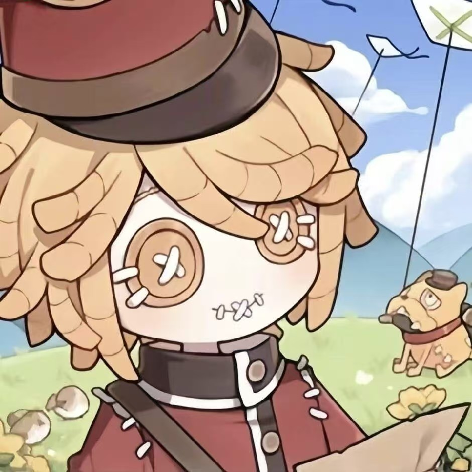

Biaolong Xie
Research synthesis, product framing, and content polishing.
A four-person team building a climbing concept that combines route guidance, playful motivation, and lightweight social connection.
Research synthesis, product framing, and content polishing.

Web implementation, page structure, and interface refinement.

Persona development, journey mapping, and feature planning.

Visual identity, poster support, and user testing documentation.
Although each member has a stronger focus area, the project is built collaboratively through idea reviews, visual consistency checks, and iteration based on feedback.
We look at how beginners choose routes, how experienced climbers prepare sessions, and where current tools still feel generic.
Instead of designing another dry tracker, we focus on small moments of confidence, momentum, and social connection.
The site is structured as a lightweight portfolio and can later connect to a more interactive prototype or demo system.